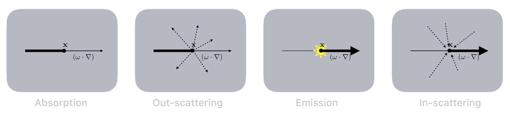
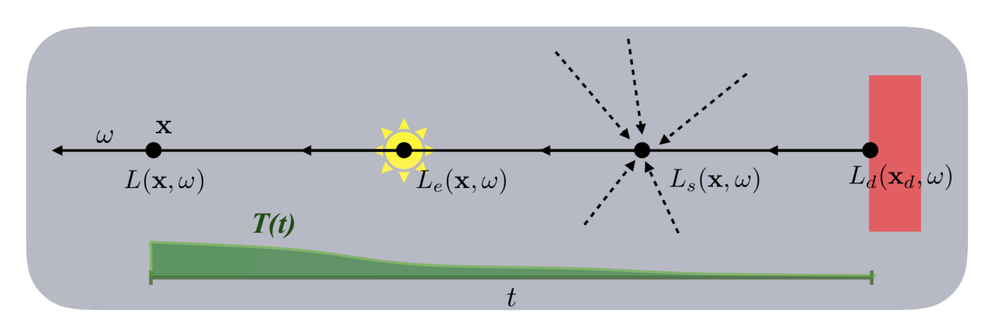
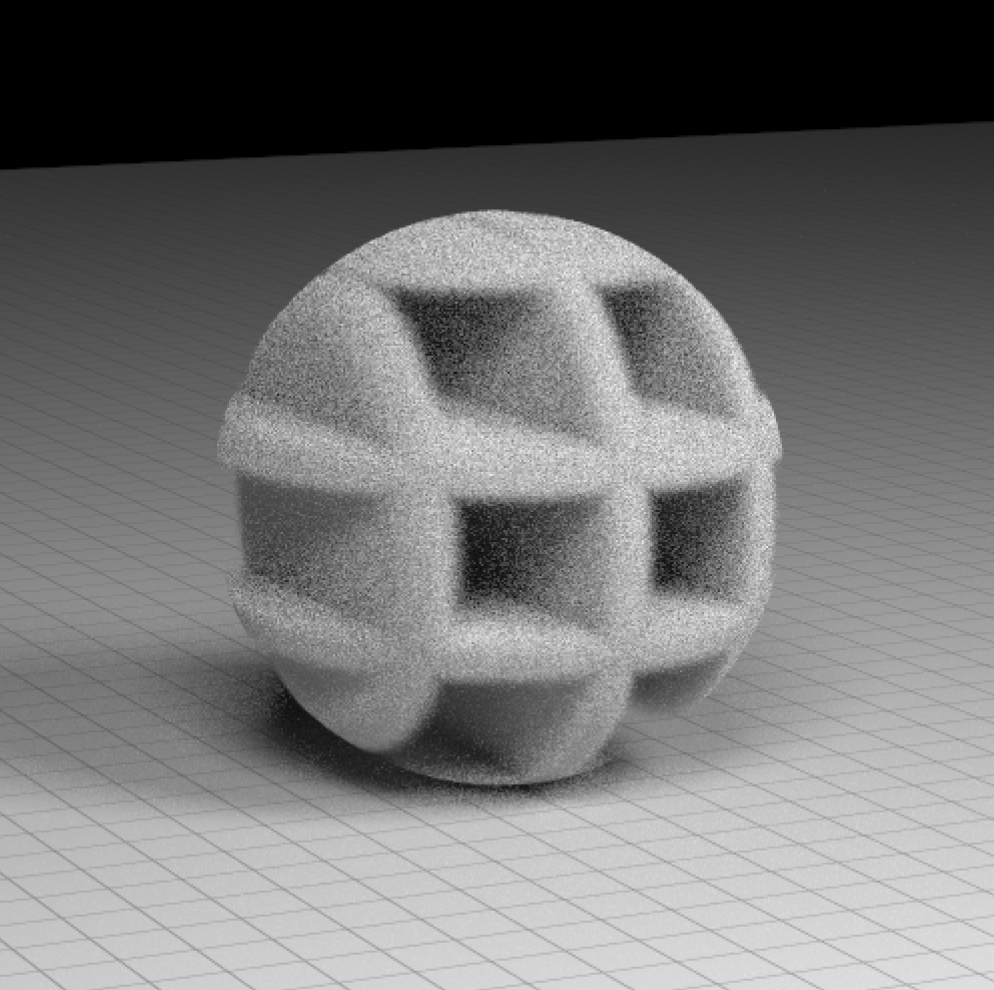

Thanks to significant advances in techniques, along with increasing computational power, path tracing has now become the predominant rendering method used in production, therefore it is convenient to implement a volumetric renderer as an extension of a path tracer.
**Volumes**
Volumes, in the sense they are describing for rendering purposes, are collections of very small particles. The average density of the particles needs to be relatively low so that their size is negligible compared to the average distance between them. This is a prerequisite for statistically independent collisions and is usually the case in any gaseous or translucent media.
As a radiance beam travels through a volume, it may collide with the particles making up the medium, defining the radiance distribution throughout a volume. Because it is not feasible to model each and every particle in a volume, they are treated as collision probability fields.
The properties of volumes are defined by the volumetric density, albedo and emission together with the phase function. Density. The chance of a photon collision at the point $\mathbf x$ inside the volume is defined by the volumetric density coefficient $v_d(\mathbf x)$, which is the probability density of collision per unit distance traveled inside the volume. The physical unit of the density coefficient is the inverse length and $\frac{1}{v_d(\mathbf{x})}$ is in fact the mean free path in the medium. In general, we consider only the case where the coefficients are a function of position and make them spectrally varying where appropriate.
_Albedo_. The volumetric albedo coefficient $v_a \in [0,1]$ is the fraction of energy that, after a collision, is scattered into different directions, defined by the phase function. It is called _albedo_ because it is a measure of how much radiance is reflected, hence it defines brightness and color of a volume.
The remaining part of the energy is absorbed by the volume. We call this fraction absorption, defined as $\bar v_a = 1-v_a$.
Physically, the absorption models conversion of energy in terms of translational or vibrational modes in molecules, or more generally heat.
_Phase function_. The phase function $f(\textbf{x},\vec\omega, \vec\omega_i)$ is the angular distribution of radiance scattered and need to be normalized over the sphere, otherwise scattering events would add or subtract energy to the volume.
$$\int_{S^2} f(\textbf{x},\vec\omega, \vec\omega_i) d\vec\omega_i = 1$$
The phase function must also have the reciprocity property, therfore $f(\textbf{x},\vec\omega, \vec\omega_i) = f(\textbf{x},\vec\omega_i, \vec\omega)$. Thanks to reciprocity we can integrate transmitted radiance along a path independetly from the followed direction.
The model used is the Henyey-Greenstein phase function.
$$f(\textbf{x},\vec\omega, \vec\omega_i) = \frac{1}{4 \pi} \frac{1-g^2}{ \left( 1 + g^2 - 2 g (\vec\omega \cdot \vec\omega_i) \right)^{\frac{3}{2}} } $$
where $-1 < g < 1$ is the average cosine of the scattering directions, and controls the asymmetry of the phase function. If $g<0$, it models backwards scattering, $g > 0$ forward sacttering while for $g=0$ it reduces to isotropic scattering $f(\textbf{x},\vec\omega, \vec\omega_i) = \frac{1}{4 \pi}$.
The advantage of the Henyey-Greenstein phase function is that it can be perfectly importance sampled, as we will see.
_Emission_. The volumetric emission $L_e(\mathbf x, \vec\omega)$ is the radiance emitted from the point $\mathbf{x}$ along the direction $\vec\omega$. In any practical scenario, volumes do not emit light directionally, hence the emission is isotropic: $L_e(\mathbf x, \vec\omega) = L_e(\mathbf x)$. For non emissive volumes, this term is simply zero.
**The volume rendering equation**
Let us now see what physical phenomena affect the propagation of light in volumes and how they are modeled.
Light can undergo four different kind of interaction with the medium: absorption, out-scattering, emission and in-scattering.

_Absorption_. A radiance beam $L(\textbf{x}, \vec{\omega})$, starting at \textbf{x} with direction $\vec{\omega}$, is subject to loss of energy due to absorption by the medium. This change in radiance is modeled with the derivative in the direction $\vec\omega$, expressed as $(\vec\omega \cdot \nabla)$, and is proportional to collision probability (the volumetric density) and the absorption coefficient of the medium
$$(\vec\omega \cdot \nabla) L(\mathbf{x}, \vec\omega) = -\bar v_a v_d(\mathbf x) L(\mathbf x, \vec\omega)$$
_Out-scattering_. The exemplary beam $L(\textbf{x}, \vec{\omega})$ also loses radiance due to out-scattering into other directions than its own direction $\vec\omega$. This radiance is not lost to the overall radiance field, but to the specific direction of this beam and contributes to other positions/directions of the radiance field $L$. The loss in this case is proportional to the albedo $v_a$ $$(\vec\omega \cdot \nabla) L(\mathbf{x}, \vec\omega) = -v_a v_d(\mathbf{x}) L(\mathbf x, \vec\omega)$$
_Emission_. Traversed matter can also emit light and add radiance to the beam. $L_e(\mathbf x, \vec\omega)$ is the emitted radiance of the point $\mathbf{x}$ in direction $\vec\omega$.
$$(\vec\omega \cdot \nabla) L(\mathbf{x}, \vec\omega) = \bar v_a v_d(\mathbf x) L_e(\mathbf x, \vec\omega)$$
_In-scattering_. In-scattering is the contribution from the out-scattering of all of the other directions $\vec\omega_i$ at \textbf{x}, increasing the net radiance of the exemplary radiance beam:
$$(\vec\omega \cdot \nabla) L(\mathbf{x}, \vec\omega) = v_d(\mathbf{x}) v_a(\mathbf{x}) \int_{S^2} f(\textbf{x},\vec\omega, \vec\omega_i) L(\textbf{x}, \vec{\omega}) d{\vec\omega_i}$$
where $S_2$ denotes the spherical domain around the position $\mathbf{x}$. The coefficients $v_d(\mathbf{x})v_a(\mathbf{x})$ in front of the integral weight the scattering of the incoming radiance from all of the directions. The radiance beam essentially picks up all of the radiance scattered into its own direction from all other directions.
To simplify notation we shorten the in-scattering integral term as
$$L_s(\mathbf{x}, \vec\omega) = \int_{S^2} f(\textbf{x},\vec\omega, \vec\omega_i) L(\textbf{x}, \vec{\omega}) d\vec{\omega_i}$$
If we add up all the terms coming from the four kind of interaction, we get the radiative transfer equation (RTE).
$$(\vec\omega \cdot \nabla) L(\mathbf{x}, \vec\omega) = v_d(\mathbf x) \left(-L(\mathbf x, \vec\omega) + \bar{v}_a L_e(\mathbf x, \vec\omega) + v_a L_s(\textbf{x}, \vec{\omega}) \right) $$
The RTE models what happens to the radiance beam on every infinitesimal step along its direction. If we want the exact quantity of radiance transported through the direction $\vec\omega$ into the point $\mathbf{x}$, we must integrate both sides of the equation arriving at
$$L(\textbf{x}, {\vec\omega}) = \int_{0}^{\infty} \exp{\left(-\int_{0}^t v_d(\mathbf x_s)ds\right)} v_d(\mathbf x_t) \left( \bar{v}_a L_e(\textbf{x}_t, \vec{\omega}) + v_a L_s(\textbf{x}_t, \vec\omega) \right) dt$$
where $\mathbf{x}_t = \mathbf{x}-t \vec\omega$.

This is the volume rendering equation (VRE) and can be interpreted as a generalization of the rendering equation to include volumetric structures while surfaces are nearly infinitely dense volumes with complex phase functions.
The VRE is what must be solved for every visible point in order to achieve photorealistic rendering of transmissive objects.
**Tracking**
In order to implement volume rendering as a surface path tracing extension, the same approach is taken, therefore once again Monte Carlo methods are used to integrate the VRE.
The integration domain of the outer integral of the VRE is the line along the direction $\vec\omega$ of the radiance beam, hence in order to perform Monte Carlo integration we need a strategy to sample points along this line, hence distances. In order to reduce variance, it is important to sample values following a probability density function that is as much as possible proportional to the integrand.
The approach of _tracking_ is to simulate how a light particle bounces around inside a volume, explicitly modeling absorption and scattering collisions. In a numerical sense, we do not allow the radiance beam to split itself up into fractional contributions, we only choose which collision type should be modeled. This is done by perfectly importance sampling the events during Monte Carlo integration.
A dominant term in of the integrand is transmittance $T(t) = \exp\left( - \int_{0}^{t}{v_d(\mathbf x_s)\ ds}\right)$, therefore we choose a sampling strategy proportional to the term $T(t)$.
To simplify this phase, let us assume for now that the medium is homogeneous, hence it has spatially constant volumetric density $v_d$. In such a case, we can find an analytic expression for the generic transmittance:
$$T(t) = e^{-v_d\ t}$$
To perfectly importance sample the term $T(t)$, we must sample distances following a density function $pdf_{\tau}(t) = \frac{T(t)}{\int_{\mathbb{R}} T} = v_d\ e^{-v_d\ t}$.
A computer can only generate pseudo-random numbers with uniform distribution, so if we want to use a random variable with a probability density $pdf_{\tau}$ we must use the inverse transform sampling: first of all, we find the cumulative distribution function for $pdf_{\tau}$ and this can be done analytically
$$ cdf_{\tau}(t) = \int_0^{t} pdf_{\tau}(s) ds = 1-e^{-v_d t}$$
To generate the proper random variable by sampling a uniform random value $\xi \in [0,1]$, we just need to evaluate $cdf_{\tau}^{-1}$
$$\tau(\xi) = cdf_{\tau}^{-1}(\xi) = - \frac{\ln(1-\xi)}{v_d}$$
Let us now substitute the term $T(t) v_d = pdf_{\tau}(t)$ in the VRE. We get
$$L(\textbf{x}, {\vec\omega}) = \int_{0}^{\infty}
pdf_{\tau}(t) \left( \bar v_a L_e(\textbf{x}_t, \vec{\omega}) + v_a L_s(\textbf{x}_t, \vec\omega) \right) dt$$
Sampling distances $\tau$ using the presented strategy, we get the following Monte Carlo estimator of the VRE, in which the term $pdf_{\tau}$ cancels out
$$\langle L(\textbf{x}, {\vec\omega}) \rangle_{\tau} =
\bar v_a L_e(\textbf{x}_{\tau}, \vec{\omega}) + v_a L_s(\textbf{x}_{\tau}, \vec\omega)$$
We can further improve this estimator by employing Russian roulette to decide on a single type of collision being sampled instead of trying to estimate all of them at the same time.
$$
\langle L(\textbf{x}, {\vec\omega}) \rangle_{\tau, \xi} =
\begin{cases}
L_s(\textbf{x}_{\tau}, \vec{\omega}) & \textrm{if } \xi < v_a \\
L_e(\textbf{x}_{\tau}, \vec{\omega}) & \textrm{if } \xi \ge v_a
\end{cases}
$$
This approach is mathematically sound, we can see in fact that its expected value is
$$\mathbb{E}[\langle L(\mathbf{x}, \vec\omega \rangle] =
\bar v_a L_e(\textbf{x}_{\tau}, \vec{\omega}) + v_a L_s(\textbf{x}_{\tau}, \vec\omega)$$
Therefore, this new estimator is as unbiased as the previous one.
This estimator cannot be practically used yet because unlike $L_e(\textbf{x}_t, \vec{\omega})$, which can be directly evaluated, $L_s(\textbf{x}_t, \vec{\omega})$ is given by an integral expression which value is unknown.
The value of $L_s(\mathbf{x}, \vec\omega) = \int_{S^2} f(\textbf{x},\vec\omega, \vec\omega_i) L(\textbf{x}, \vec{\omega}) d\vec{\omega_i}$ must be estimated via Monte Carlo, using $f$ as sampling strategy, since it can be perfectly importance sampled.
Given two uniform random variables $\xi_1$ and $\xi_2$ in $[0,1]$, the two Euler angles of the sampled direction can be computed in the following way
$$\cos\theta = \frac{1}{2g} \left( 1 + g^2 - \left( \frac{1-g^2}{1-g+2g\xi_1} \right)^2 \right)$$
$$\phi = 2\pi \xi_2$$
where $\cos\theta = \vec\omega \cdot \vec\omega_i$. Given $\cos\theta$ and $\phi$, the direction $\vec\omega_i$ can be obtained using spherical coordinates.
This sampling induces a probability density function $pdf_{\Omega}({\vec\omega_i}|\vec\omega) = f(\textbf{x},\vec\omega, \vec\omega_i)$, therfore the Monte Carlo estimator for the scattiring integral is simply
$$\langle L_s(\mathbf{x}, \vec\omega) \rangle_{\omega_i} = L(\textbf{x}, \vec{\omega_i})$$
The resulting complete estimator is then the following.
$$\langle L(\textbf{x}, {\vec\omega}) \rangle_{\tau, \xi, \omega_i} =
\begin{cases}
\langle L(\textbf{x}_{\tau}, \vec{\omega_i}) \rangle & \textrm{if } \xi < v_a \\
L_e(\textbf{x}_{\tau}, \vec{\omega}) & \textrm{if } \xi \ge v_a
\end{cases}
$$
It is obviously recursive and, by taking one sample for each inner estimator just like in path tracing, its integration can be thought of as simulating random walks of photons inside a volume until they are absorbed.
This approach is called regular tracking and is summarized in the pseudocode.
```
regular_tracking: (vec3f positon, vec3f direction) -> radiance {
while (true) {
t := -log(random()) / volume_density
x += t * direction
if (random() < volume_albedo)
direction = sample_phase_function(direction)
else
return volume_emission
}
}
```
**Delta tracking**
Regular tracking can model homogeneous volumes with constant density. If we want to render heterogeneous volumes in which $v_d(\mathbf x)$ is spatially varying, we must employ _delta tracking_.
The key to sampling free-path distances in heterogeneous volumes is to introduce a fictitious collision type that homogenizes the total collision density in such a way that the sampling strategy as used in closed regular tracking sees a homogeneous volume. In this new type of collision, called null-collision, the volume scatters in the same direction as the incoming direction and simply steps forward, having no net effect on the light transport itself.
As said, we just need to perform regular tracking but using a density coefficient $v_D$ that is a majorant of the density for each point in the volume.
$$v_D \ge v_d(\mathbf x) $$
The probability of sampling a null collision at each medium interaction event is defined for each point as
$$n(\mathbf x) = 1 - \frac{v_d(\mathbf x)}{v_D}$$
Given these two values, we must only perform regular tracking using $v_D$ as volume density and sample also null collision events, which will have no effect.
At each a medium interaction, with probability $n(\mathbf x)$, a null collision is sampled. If that is the case, the event is ignored and the integration continues in the same direction, without any other effect.
In the other case, a medium interaction event must be computed and this is done with the same approach of regular tracking. The only difference is that the scattering probability $v_a$ must be re-scaled taking into account the conditional event of not having sampled a null collision. Therefore, if $\bar n(\mathbf x) = 1 - n(\mathbf x)$, the scattering probability must be $v_a \bar n(\mathbf x)$ while the absorption probability $(1-v_a) \bar n(\mathbf x)$.
$$\langle L(\textbf{x}, {\vec\omega}) \rangle_{\tau, \xi, \omega_i} =
\begin{cases}
\langle L(\textbf{x}_{\tau}, \vec\omega)\rangle & \textrm{if } \xi < n(\mathbf x) \\
\langle L(\textbf{x}_{\tau}, \vec\omega_i)\rangle & \textrm{if } n(\mathbf x) \le \xi < n(\mathbf x) + v_a \bar n(\mathbf x) \\
L_e(\textbf{x}, \vec{\omega}) & \textrm{if } \xi \ge n(\mathbf x) + v_a \bar n(\mathbf x)
\end{cases}
$$
```
delta_tracking: (vec3f positon, vec3f direction) -> radiance {
while (true) {
float t = -log(random()) / volume_density_majorant
x += t * direction
float null_prob = 1 - volume_density(x) / volume_density_majorant
if (random() < null_prob)
continue
if (random() < volume_albedo)
direction = sample_phase_function(direction)
else
return volume_emission
}
}
```

*Boundary term*
Until now we have solved the VRE as an integral from 0 to infinity, but it is actually impossible that the medium extends in all direction with no bounds. We must assume that the radiance beam eventually exits from volume after a distance $b$ (this value can be explicitly found during computation using ray tracing).
We therefore get a boundary term $L_d(\mathbf{x}_d, \vec\omega)$ in the integral, which is the radiance incoming from the end the the medium. The VRE becomes
$$L(\textbf{x}, {\vec\omega}) = \int_{0}^{b} T(t) v_d(\mathbf x_t) \left( \bar{v}_a L_e(\textbf{x}_t, \vec{\omega}) + v_a L_s(\textbf{x}_t, \vec\omega) \right)dt + T(b) L(\mathbf x_b, \vec\omega)$$
With a bounded volume, since the sampling strategy samples unbounded distances, it may be the case that some sampled points will be outside the volume. In those cases, we assume that the radiance beam exited the volume hence the boundary contribution must be added, which is the radiance entering the volume from the point $\mathbf x_b$ along direction $\vec\omega$. The probability of sampling the boundary is the integral of all the probabilities that a point outside the volume is sampled
$$\textrm{Pr}(\tau > b) = \int_{b}^{\infty} pdf_{\tau}(t) dt = T(b)$$
This probability is exactly the constant in front of the boundary radiance $L(\mathbf x_b, \vec\omega)$, hence it will cancel out when considering the estimator.
With the introduction of the boundary contribution, we can now define the final Monte Carlo estimator that also takes into account the termination of recursion due to exiting from the volume and its contribution.
$$\langle L(\textbf{x}, \vec\omega) \rangle_{\tau, \xi, \omega_i}^b =
\begin{cases}
\langle L(\textbf{x}, \vec\omega)\rangle_{\tau, \xi, \omega_i} & \textrm{if } \tau < b \\
L(\mathbf x_b, \vec\omega) & \textrm{if } \tau \ge b
\end{cases}
$$
where $\langle L(\textbf{x}, \vec\omega)\rangle_{\tau, \xi, \omega_i}$ is the delta tracking VRE estimator defined before.
The term $L(\mathbf x_b, \vec\omega)$ is the radiance coming from outside the volume, therefore this term could be estimated by a surface path tracer: this is the point where volume rendering swaps with surface rendering.
If the point $\mathbf x_b$ is inside another volume that is containing the previous one, then $L(\mathbf x_b, \vec\omega)$ will be given again as by the volume renderer.
```
delta_tracking: (vec3f positon, vec3f direction, float bondary) -> radiance {
while (true) {
float t = -log(random()) / volume_density_majorant
if (t > boundary)
return path_trace(x + boundary * direction, direction)
x += t * direction
float null_prob = 1 - volume_density(x) / volume_density_majorant
if (random() < null_prob) {
boundary -= t
continue
}
if (random() < volume_albedo) {
direction = sample_phase_function(direction)
boundary = ray_trace(positon, direction)
}
else
return volume_emission
}
}
```
**Ratio tracking**
In a volumetric path tracer, in order to compute the contribution of direct lighting, it is also needed to estimate the transmittance of a portion of volume such that is possible to obtain the radiance that from the light source reaches a certain point. This can be done by integrating the term $T(t) = \exp\left( - \int_{0}^{t}{v_d(\mathbf x_s)\ ds}\right)$.
To obtain an estimate of $T(t)$ some approaches employ quadrature (using ray marching) or Russian roulette (hence estimated transmittance is either 0 or 1 in each sample).
The method that is proven to produce the least variance is ratio tracking, where the transmittance is estimated following the approach of delta tracking and joint probability of consecutive null collision events from the origin point to the destination.
$$T(b) = \prod_{i=1}^K n(\mathbf x_i)$$
```
ratio_tracking: (vec3f positon, vec3f direction, float distance) -> Trasmittance {
float trasmittance = 1
float t = 0
while (true) {
t -= log(random()) / volume_density_majorant
if (t > distance)
return trasmittance
x += t * direction
trasmittance *= 1 - volume_density(x) / volume_density_majorant
}
}
```